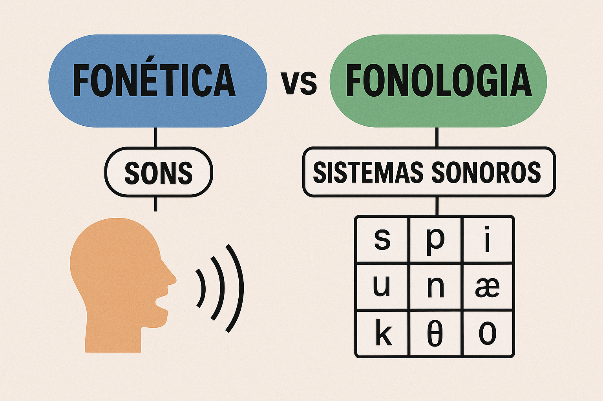

Introdução à Fonética: o que é, para que serve e como se relaciona com a fonologia
A linguagem humana é uma das capacidades mais complexas e fascinantes da nossa espécie. Dentro dos estudos da linguagem, a fonética se destaca como a área responsável por investigar os sons da fala — não apenas enquanto abstrações, mas como fenômenos físicos, fisiológicos e perceptíveis. Ao compreender como os sons são produzidos, transmitidos e percebidos, abrimos espaço para uma reflexão mais profunda sobre a estrutura e o funcionamento das línguas naturais.
O que é Fonética?
A fonética é a área da linguística que estuda os sons da fala humana sob uma perspectiva empírica e científica. Diferente da fonologia, que se dedica à organização abstrata dos sons nas línguas, a fonética está interessada nas propriedades físicas e articulatórias desses sons.
De acordo com Câmara Jr. (1970), "a fonética estuda os sons da fala em sua realidade física, enquanto a fonologia se preocupa com o sistema de sons que distinguem significados numa dada língua". Essa distinção é fundamental para entendermos que, embora os sons e os fonemas se relacionem, tratam-se de níveis diferentes de análise linguística.

Para que serve a Fonética?
A fonética tem aplicações práticas e teóricas em diversas áreas:
- Ensino de línguas: auxilia no desenvolvimento da pronúncia e na identificação de dificuldades específicas dos aprendizes.
- Fonoaudiologia: oferece base para o diagnóstico e tratamento de distúrbios da fala.
- Tecnologia da fala: é fundamental para o desenvolvimento de sistemas de reconhecimento de voz e síntese de fala.
- Análise forense: permite identificar vozes com base em características fonéticas.
- Estudos linguísticos: contribui para a descrição de línguas indígenas, em perigo ou pouco documentadas.

Além disso, a fonética é essencial para os professores de língua portuguesa que desejam ampliar seu domínio sobre a norma culta, as variações fonéticas regionais e os aspectos da ortografia relacionados à pronúncia.
Subáreas da Fonética
A fonética pode ser dividida em três subáreas principais:
- Fonética articulatória: estuda como os sons são produzidos pelos órgãos da fala.
- Fonética acústica: analisa as propriedades físicas dos sons (frequência, intensidade, duração).
- Fonética auditiva: investiga como os sons são percebidos pelo ouvido humano e processados pelo cérebro.
Essas dimensões se complementam e fornecem um panorama completo do fenômeno sonoro linguístico.
Relação com a Fonologia
Embora fonética e fonologia se entrelacem, seus focos são distintos. A fonologia lida com os fonemas, unidades sonoras abstratas que têm valor distintivo numa língua. Já a fonética estuda os fones, os sons concretos que são efetivamente produzidos e percebidos.
Por exemplo, no português, os sons [s] e [z] são variantes fonéticas (alofones) do mesmo fonema /s/, dependendo do contexto fonológico. Compreender essa distinção é essencial para o estudo da língua tanto em sua forma falada quanto escrita.
Como destaca Cristófaro-Silva (2003), "o estudo fonético fornece subsídios para a fonologia ao descrever e classificar os sons, possibilitando que se estabeleçam padrões e regularidades em seu uso".
Referências
CÂMARA JR., Joaquim Mattoso. Estrutura da língua portuguesa. 20. ed. Petrópolis: Vozes, 2008.
CRISTÓFARO-SILVA, Thaïs. Fonética e fonologia do português: roteiro de estudos e guia de exercícios. 7. ed. São Paulo: Contexto, 2003.
ROACH, Peter. English Phonetics and Phonology: A practical course. 4th ed. Cambridge: Cambridge University Press, 2009.
O’CONNOR, J. D. Phonetics. London: Penguin Books, 1973.